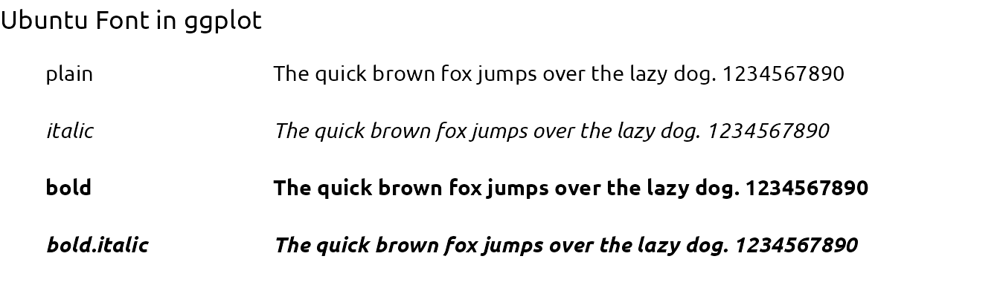
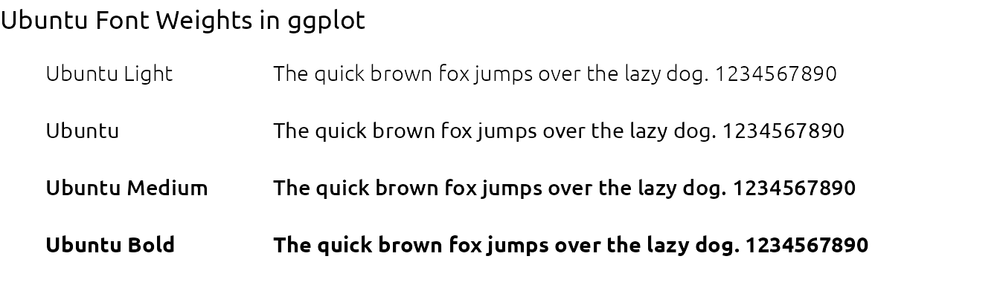
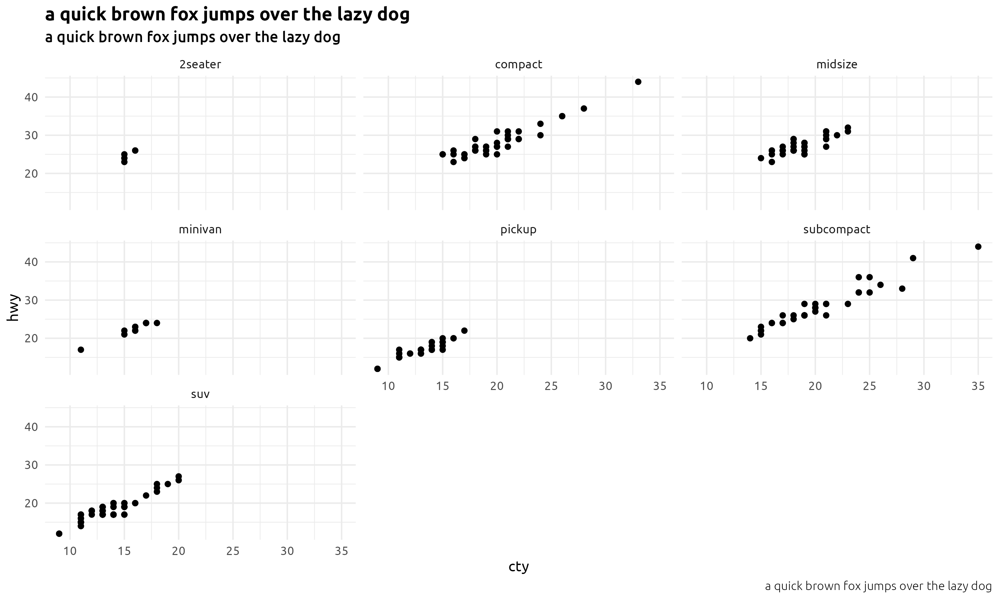
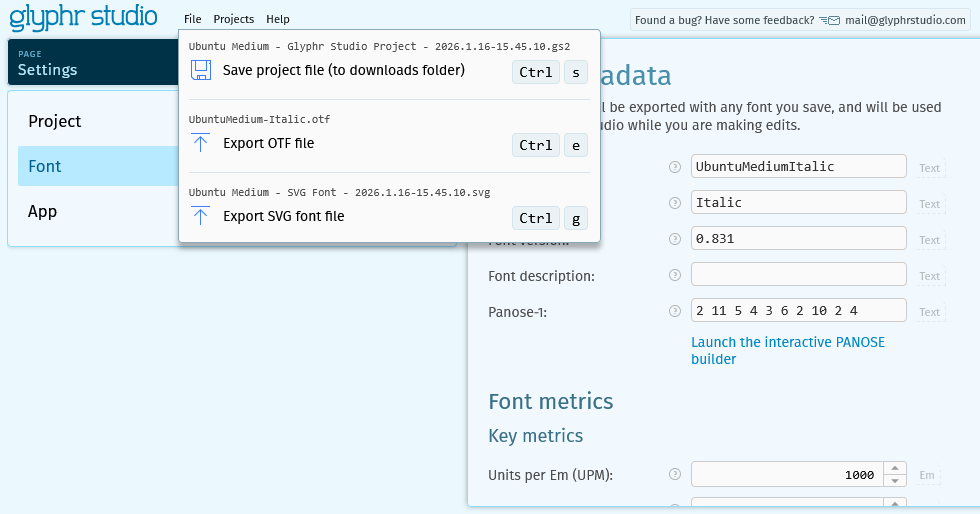
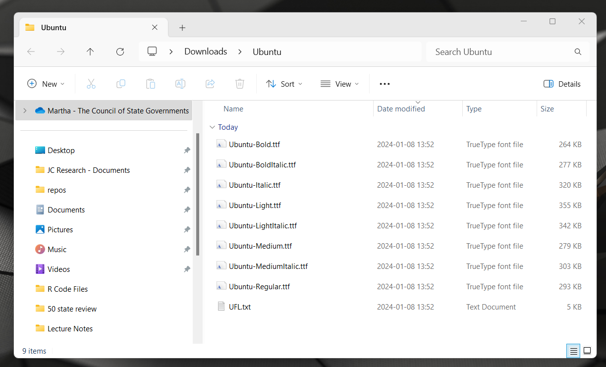
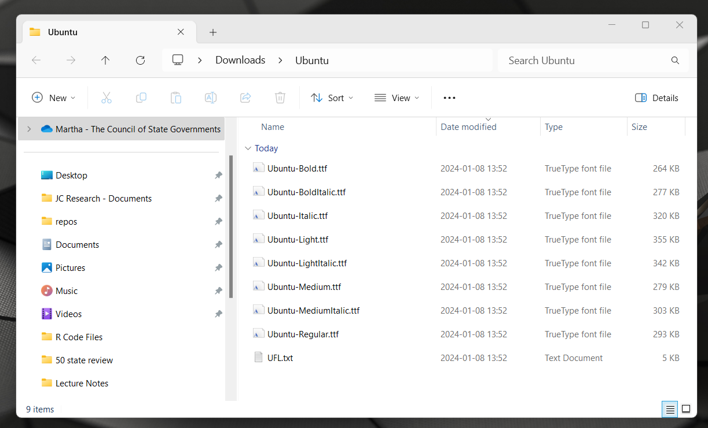

Start by setting up your R studio environment by following these instructions:
install the ragg, the systemfonts will also be installed package as it’s a dependency of ragg
Set default graphics device to use AGG in Tools > Global Options > General > Graphics
review available fonts using systemfonts::system_fonts()
At this point, all fonts that are installed on your machine are available for use.
4.1.2 Convert to .ttf
There are many different types of font files, only .ttf will work with R & ggplot together. If the custom font you want to use is not a .ttf file, you will need to convert it.
I used convertio.co website to convert font files to .ttf files.
4.1.3 Install Fonts on Machine
Open a .ttf file. Click ‘install’ in top right hand corner. You need to do this for each font file you plan to use.
Ways to check to see if font has been installed on your machine:
Open up Word/PowerPoint/Excel and see if the new font can be used in the document
Control Panel > Appearance and Personalization > Fonts and search for font in folder
# A tibble: 8 × 7
name family style weight width italic monospace
<chr> <chr> <chr> <ord> <ord> <lgl> <lgl>
1 Ubuntu-BoldItalic Ubuntu Bold Italic bold normal TRUE FALSE
2 Ubuntu-Italic Ubuntu Italic normal normal TRUE FALSE
3 Ubuntu-Light Ubuntu Light light normal FALSE FALSE
4 Ubuntu-LightItalic Ubuntu Light Italic light normal TRUE FALSE
5 Ubuntu-Medium Ubuntu Medium medium normal FALSE FALSE
6 Ubuntu-MediumItalic Ubuntu Medium Italic medium normal TRUE FALSE
7 Ubuntu-Regular Ubuntu Regular normal normal FALSE FALSE
8 Ubuntu-Bold Ubuntu Bold bold normal FALSE FALSE
4.1.5 Use Fonts in ggplot
4.1.5.1 Basic Styling (Bold/Italic)
df <-tibble(x =rep(0, 4), y =c(4:1), font =rep("Ubuntu", 4), style =c("plain", "italic", "bold", "bold.italic"))ggplot(df, aes(x = x, y = y)) +labs(title ="Ubuntu Font in ggplot") +geom_text(aes(x = x-0.2, label = style, family = font, fontface = style), hjust =0) +geom_text(aes(family = font, fontface = style), label ="The quick brown fox jumps over the lazy dog. 1234567890", hjust =0 ) +scale_y_continuous(limits =c(0.5, 4.5)) +scale_x_continuous(limits =c(-0.2, 0.6)) +theme_void() +theme(plot.title =element_text(family ="Ubuntu", face ="plain"))

4.1.5.2 Weight Styling (Medium/Light)
Many custom fonts will have a light or medium weight version of the font. In order to use these styles, the user must register these fonts separately. This needs to occur every session.
All font variants can be hoisted at the same time creating hoist_fonts() function. If you are using the fonts for ggplot2 items within a shiny app, please review Adding Custom Fonts to a Shiny App
font_hoist <-function(family, silent =FALSE) { font_df <-system_fonts()# filter to specified font family font_varients <- font_df[which(font_df$family == family), c("family", "style", "path")] font_specs <-data.frame(name =paste(font_varients$family, font_varients$style), # create unique variant nameplain = font_varients$path # rename to match arguments in register_font fnc )pwalk(as.list(font_specs), register_font)if (!silent) message(paste0("Hoisted ", nrow(font_specs), " variants:\n",paste(font_specs$name, collapse ="\n")))}
df <-tibble(x =rep(0, 4), y =c(4:1), font =c("Ubuntu Light", "Ubuntu", "Ubuntu Medium", "Ubuntu Bold"), style =rep("plain", 4) )ggplot(df, aes(x = x, y = y)) +labs(title ="Ubuntu Font Weights in ggplot") +geom_text(aes(x = x-0.2, label = font, family = font, fontface = style), hjust =0) +geom_text(aes(family = font, fontface = style), label ="The quick brown fox jumps over the lazy dog. 1234567890", hjust =0 ) +scale_y_continuous(limits =c(0.5, 4.5)) +scale_x_continuous(limits =c(-0.2, 0.6)) +theme_void() +theme(plot.title =element_text(family ="Ubuntu", face ="plain"))

4.1.6 Export to PNG
gg <-ggplot(mpg, aes(x = cty, y = hwy)) +geom_point() +facet_wrap(~class) +labs(title ="a quick brown fox jumps over the lazy dog",subtitle ="a quick brown fox jumps over the lazy dog",caption ="a quick brown fox jumps over the lazy dog" ) +theme_minimal(base_family ="Ubuntu") +theme(plot.title =element_text(family ="Ubuntu Bold"),plot.subtitle =element_text(family ="Ubuntu Medium"),plot.caption =element_text(family ="Ubuntu Light") )ggsave(plot = gg,filename =file.path("img/fonts-export-01.png"),dpi =300,height =6,width =10,units ="in",bg ="transparent")

4.1.7 Export to PDF
Hoisting fonts (as listed above) works for displaying preview window and exporting to png files; however this will not work if saving image as pdf.
I went to Glphyr Studio and uploaded Ubuntu-MediumItalic.ttf by clicking the ‘Load’ tab. Uploading takes a 1-2 minutes.
Once the font is uploaded, change the name of the font by clicking the Edit project and font info. Select the ‘Font’ tab and change the name, in this case to “UbuntuMediumItalic.”
Finally, select file and export the otf file.

4.1.7.0.2 Step 2: Install font
Open the otf file and click the install button. After this is complete, the ‘new’ font should show up in the Fonts on the control panel.
After restarting the R environment, the custom font should also be displayed in the system fonts.
The fonts will NOT work in the ggplot preview or when saving as png – only in saved pdf files.
gg <-ggplot(mpg, aes(x = cty, y = hwy)) +geom_point() +facet_wrap(~class) +labs(title ="a quick brown fox jumps over the lazy dog",subtitle ="a quick brown fox jumps over the lazy dog",caption ="a quick brown fox jumps over the lazy dog" ) +theme_minimal(base_family ="Ubuntu") +theme(plot.title =element_text(family ="UbuntuMediumItalic"),plot.subtitle =element_text(family ="UbuntuMediumItalic"),plot.caption =element_text(family ="UbuntuMediumItalic") )gg
install.packages("extrafont")remotes::install_version("Rttf2pt1", version ="1.3.8")
As of August 2022, if you just install {extrafont} as is, you will have a problem with importing fonts on Windows and there will be an error saying ‘No Font Name’. To solve this, install version 1.3.8 of {Rttf2pt1}.
 
